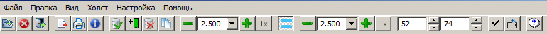

Отметка - один из способов (наряду с холстом и рамкой выделения) отбора объектов изображения для последующего выполнения над ними некоторых операций - экспорта, распечатки или копирования в буфер обмена. Отметить или разотметить примитивы загруженного изображения можно рядом способов - с помощью холста, рамки выделения, а также индивидуально, указав курсором мыши какой-либо отдельный объект картинки и затем совершив щелчок левой её кнопкой.
Так выглядят отмеченные и неотмеченные элементы изображения:
Отмеченные элементы рисуются в окне просмотра специальными дополнительными цветами и тем самым выделяются среди всех прочих, неотмеченных примитивов изображения. Изменить состав выделенных элементов можно так:
Второй вариант - отметка/разотметка всех примитивов, хотя бы частично расположенных на площади холста. Такая операция возможна, если холст активен и выведен в область изображения. Для её осуществления следует активировать пункт-переключатель меню "Правка/С холста", а затем задействовать какой-либо из следующих пунктов меню: "Правка/Отметить указанное", "Правка/Инвертировать указанное" или "Правка/Снять указанные отметки". Первый пункт при этом отмечает все элементы, имеющие непустое пересечение с площадью холста. Второй - изменяет состояние отмеченности всех таких элементов на противоположное - неотмеченных на отмеченные, а с отмеченных отметки снимаются. Наконец, пункт "Правка/Снять указанные отметки" безусловно разотмечает все попадающие на холст примитивы.
Третий вариант функционирует аналогично второму, но предполагает активацию пункта-переключателя "Правка/Внутри контура". В этом случае отмечающим инструментом является рамка выделения. Для возможности выполнения операций она должна существовать и быть выведенной в область просмотра картинки. Те же указанные выше пункты меню "Правка" выполняют в этом случае аналогичные действия над множеством отмеченных элементов, но в качестве целевых примитивов тут будут выступать те, описанный прямоугольник которых имеет непустое пересечение с площадью выделяющей рамки.
Следует указать также, что при активации обоих переключателей ("Правка/С холста" и "Правка/Внутри контура") отмечательные операции будут выполняться над примитивами, удовлетворяющим обоим требованиям одновременно - находящимися как в площади холста, так и в площади выделяющей рамки. Если какого-либо из ограничительных инструментов (холста или рамки) не существует (отключён или не выведен в область просмотра изображения), то связанные с ним условия игнорируются.

Для более оперативного выполнения каждого из указанных выше действий без необходимости странствий по многоуровневой структуре меню на полосе инструментов программы (инструментарии) существуют специальные кнопки быстрого доступа, каждая из которых однозначно соответствует одному из упомянутых выше операционных пунктов меню. Кнопка 1 эквивалентна пункту "Правка/Отметить указанное", кнопка 2 - пункту "Правка/Инвертировать указанное", а кнопка 3 соответствует пункту "Правка/Снять указанные отметки".